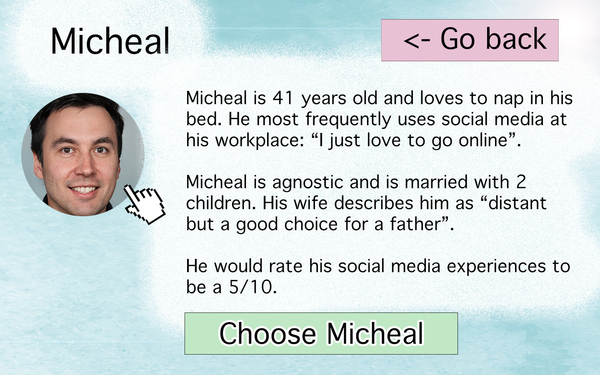

I am interested in addressing ideas about audio-visual internet algorithms and their role in the construction of an internet consumer’s imagination. I want to explore how platforms like TikTok encourage the comparison of aesthetics, messages and ideas, and how this puts the viewer in a state of psychoanalysis (pointed at both the platform and viewer), and forces them to engage with semiotic analysis. I believe questioning this imagination can reveal queries about contemporary internet life, media theory, capitalism, human nature, and the self.
Above is an example of what the selection screen might look like on the display. Each of these "vessels" will be people I know, and I will record 20 minutes of their social media use and use that as their respective ephemera. I will then pull screenshots from this ephemera (likely every 20 seconds or so) and use this as an array of images to randomly pull from for the next part of the performance.

When they choose a vessel, they will be greeted with a short description of them and their social media habits.

Then, once the participant selects a character, they are prompted with a screen that asks them to speak a question, message or story. When 10 seconds is up, a receipt printer will print 4 black and white dot matrix screenshot prints in a row that the participants can take with them as "spiritual knowlege".
Simple visual explanation of installation. This kiosk computer only looks mildly similar to the one I have, I couldn't find a picture of it online. A simple touchscreen on a vesa mounted stand connected to a windows desktop is also a possibility.